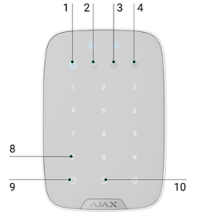

Welcome
Thank you for choosing our home for your stay in Turin. We are Andrea and Bianca and we travel with our two children: Edoardo (2018) and Filippo (2025). We love travelling as a family, discovering places in an authentic way and experiencing cities as if we lived there. Our home is a bright two-level penthouse in Cit Turin: many guests tell us how good they feel here and how special the open view over the city and the Alps is.
Before arrival
Send documents via WhatsApp
Your data will be used exclusively for this purpose and deleted immediately after submission to the authorities.
SSID: Bonelli_Guest
Password: welcome!
📄 Air conditioning 📄 Dishwasher 📄 Coffee machine 📄 Cooktop 📄 Washing machine 📄 Dryer 📄 Sofa bed 📄 Parking
Getting here and parking
The apartment is at Corso Francia 2 TER. Street parking is available below the building; for longer stays or foreign-plate cars we recommend considering guarded parking.
Recommended guarded parking
For foreign-plate cars or multi-day stays, we recommend considering guarded or covered parking.
Alarm and keys
The alarm system protects the apartment and its contents. Please activate it every time you leave the apartment unattended. Before activating it, make sure all windows are closed.
Keypad lights: light 1 = alarm activated; light 2 = system deactivated.
Keys: we will leave a set of keys at the apartment entrance. If we are not present at check-in, we will open the door remotely. At check-out, you can leave the keys in the entrance container or on the living room table; once outside, enter the code or message us so we can activate the alarm remotely.
Message Andrea on WhatsApp
Zuki will stay with you
Zuki is our Maine Coon, very sociable and affectionate. During your stay he will remain at home with you: thank you very much for taking care of him.
Tables and fragile objects▾
Night routine▾
Air conditioning
Most of the apartment is air-conditioned via the central Airzone system, controlled from the wall thermostat (usable from June 1st to August 31st only).
House rules
The main rules are listed below, always visible without dropdowns.
Cleaning and linen
For GuestPoints exchanges we ask for a cleaning contribution of €30–80, depending on the length of stay and number of guests. If you would like to use our linen: €25 per double set and €20 per single set. The contribution can be left on the dining table before check-out.
Nearby services and places
Cit Turin is one of Turin’s most elegant and pleasant neighbourhoods. Within a few minutes on foot you can reach supermarkets, pharmacy, cafés, restaurants, the metro and Porta Susa railway station. Here are some of our favourite places nearby.
Restaurants
Via Giustino Fortunato 4e
Via S. Donato 38/G
Corso Principe Eugenio 17
C.so Inghilterra
Via Luigi Cibrario 9 — takeaway available
Via Principi d'Acaja 35/H
✨ For a special occasion
A few addresses we particularly love in Turin, for a slightly more special experience. We recommend booking in advance, especially on weekends.
Borgo San Paolo — high-end creative restaurant (Ferran Adrià / Federico Zanasi), tasting menus ~€80–150. Booking required, well in advance.
Seasonal Piedmontese cuisine with a modern twist, near the historic centre. ~€35–50 per person. Booking recommended.
Historic Piedmontese trattoria in San Salvario, classic dishes. ~€30–40 per person. Very popular: book a few days ahead.
Small family-run trattoria in San Salvario, genuine Piedmontese home cooking. ~€25–35 per person. Booking recommended, especially for dinner.